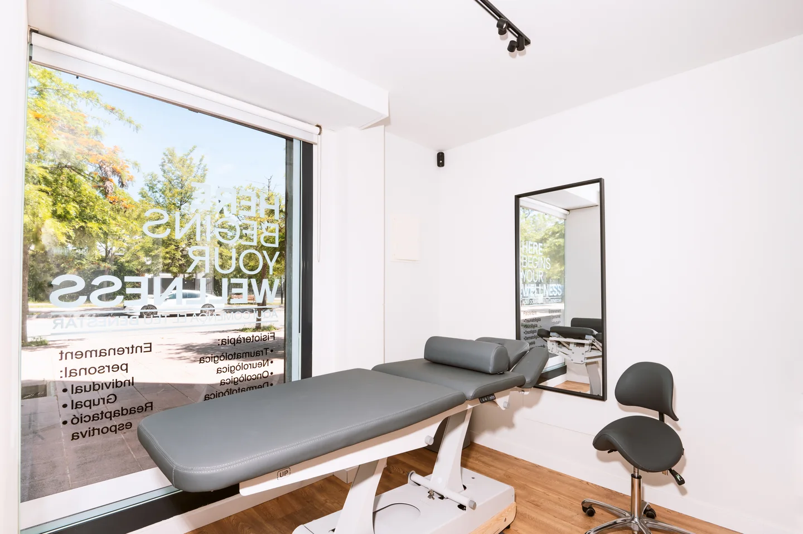

Recomiendo totalmente a este profesional a cualquiera que necesite una atención de calidad. Tiene un conocimiento muy amplio, es atento y está realmente comprometido con la recuperación de sus pacientes. Desde la primera sesión se tomó el tiempo de entender la raíz del problema, no solo los síntomas, y creó un plan de tratamiento personalizado que marcó una diferencia real.
¡Gracias!
06 — FISIOTERAPIA A DOMICILIO
Fisioterapia a domicilio cuando desplazarte no es la mejor opción.
Si no puedes acudir al centro o necesitas recibir atención en casa, puedes realizar tu proceso de fisioterapia a domicilio, con atención individual y adaptada a tu situación.
Una modalidad de Fisioterapia
Un proceso individual, sin que tengas que desplazarte
Si no puedes acudir al centro o necesitas recibir atención en casa, la fisioterapia a domicilio mantiene el mismo criterio clínico, rigor y cercanía que nuestras sesiones en consulta.
No es una intervención aislada ni un servicio de urgencia puntual: es un proceso terapéutico completo, estructurado para comprender tu punto de partida, aliviar el dolor, recuperar movilidad y asegurar una progresión continua en tu propio entorno.
01
Valoración inicial
Entendemos qué te ocurre, analizamos tu movilidad y limitaciones funcionales en tu contexto diario.
02
Tratamiento adaptado
Aplicamos terapia manual, técnicas articulares y ejercicio activo con el material trasladado a tu casa.
03
Seguimiento continuo
Pautamos recomendaciones específicas y evaluamos tu evolución sesión a sesión para consolidar mejoras.
Situaciones habituales
¿Cuándo tiene sentido la fisioterapia a domicilio?
La atención en casa responde a circunstancias concretas donde el desplazamiento compromete tu comodidad, seguridad o recuperación.
-
Dificultades temporales o prolongadas para caminar, bajar escaleras o desplazarte por la ciudad de manera autónoma y segura.
-
Primeras fases tras una cirugía donde se requiere reposo relativo y es prioritario evitar traslados en vehículo o esperas incómodas.
-
Episodios agudos de dolor lumbar, ciática o bloqueos articulares donde cualquier movimiento al exterior agrava los síntomas.
-
Atención pausada y cercana en su entorno habitual, trabajando sobre la movilidad real, transferencias y la seguridad dentro del hogar.
-
Esguinces, fracturas en evolución o traumatismos que recomiendan no apoyar peso de forma innecesaria en los primeros días.
-
Horarios exigentes, necesidades de conciliación o simplemente la preferencia de recibir tu sesión con total privacidad y tranquilidad.
El mismo rigor clínico
La clínica se desplaza contigo.
Trasladamos nuestro criterio y forma de trabajar hasta tu espacio. Recibes en casa una atención tan rigurosa y completa como la que ofrecemos en consulta.
01
Valoramos tu situación.
Análisis minucioso del dolor, balance articular y factores biomecánicos con la misma precisión que en consulta.
02
Llevamos el material necesario.
Camilla portátil profesional, productos higiénicos y herramientas terapéuticas adaptadas a tus requerimientos.
03
Adaptamos el tratamiento al espacio disponible.
Tu hogar se convierte en un entorno clínico seguro, tranquilo y cómodo, sin necesidad de acondicionamientos complejos.
04
Diseñamos el proceso con el mismo criterio que en consulta.
Misma metodología, dedicación individual y pautas de evolución continua para consolidar resultados.

“La fisioterapia a domicilio traslada el estándar clínico de Physio Wellness al paciente, nunca al revés.”
El recorrido paso a paso
Así funciona una visita a domicilio
Organizamos cada etapa para que la experiencia sea fluida, clara y transparente desde el primer contacto hasta el seguimiento de tu recuperación.
Consultar disponibilidad o resolver dudas-
Reserva
Contactas con el centro por DocFav o WhatsApp y explicas brevemente qué necesitas y tu ubicación en Sitges o cercanías.
-
Valoramos
Revisamos tu situación clínica con antelación para preparar la sesión y seleccionar el material específico para tu caso.
-
Nos desplazamos
El fisioterapeuta acude puntualmente a tu domicilio con la camilla plegable y todo el equipo necesario para la sesión.
-
Tratamiento
Valoración funcional in situ, terapia manual y pautas de movimiento dosificadas según tu tolerancia y el espacio de tu hogar.
-
Seguimiento
Definimos contigo las recomendaciones para los próximos días y planificamos la continuidad del proceso según tu evolución.
Equipamiento profesional
Todo lo necesario viaja con nosotros.
No necesitas disponer de material especial en casa. Trasladamos el instrumental profesional adecuado para asegurar un tratamiento seguro y cómodo.
01
Valoración funcional
Test ortopédicos, goniometría precisa y exploración de la respuesta neuromuscular para determinar el origen de tu limitación.
02
Camilla portátil ergonómica
Camilla clínica regulable en altura, con apoyo acolchado y orificio facial para garantizar tu descanso postural durante la terapia.
03
Terapia manual & Higiene
Cremas neutras de grado terapéutico, toallas y sábanas desechables para cumplir los más altos estándares de higiene sanitaria.
04
Movilidad y ejercicio guiado
Bandas elásticas de resistencia controlada, accesorios de propiocepción y ejercicios adaptables al mobiliario cotidiano de tu hogar.
05
Pautas de seguimiento
Guía clara de autocuidado, corrección ergonómica y recomendaciones específicas entre visita y visita.
Modalidad a domicilio
Atención 1 a 1
Fisioterapia a domicilio — 50 min
Valoración
Tratamiento
Seguimiento
Sesión individual completa de fisioterapia en tu propio hogar, dirigida por un fisioterapeuta colegiado con dedicación exclusiva durante toda la intervención. Si es tu primera sesión, dedicamos hasta 60 minutos para una valoración clínica inicial exhaustiva.
Reservar sesión a domicilio
Consultar disponibilidad por WhatsApp
El desplazamiento en Sitges y hasta 10 km está incluido. Consulta los detalles de suplementos en nuestras Tarifas de Fisioterapia.
Área de servicio
¿Hasta dónde nos desplazamos?
El servicio de fisioterapia a domicilio tiene su base en Sitges y ofrece cobertura en la localidad y municipios cercanos del Garraf y Penedès.
Consúltanos tu ubicación exacta y te confirmaremos con rapidez la disponibilidad del servicio y los tiempos de desplazamiento correspondientes a tu zona.
Dudas habituales
Preguntas frecuentes sobre fisioterapia a domicilio
Respuestas claras y prudentes a las consultas más habituales antes de tu primera visita en casa.
Únicamente un espacio despejado donde podamos desplegar la camilla de tratamiento (aproximadamente 2 × 1,5 metros), con buena iluminación y una temperatura agradable. Del resto de detalles nos encargamos nosotros.
Sí. El fisioterapeuta acude con camilla portátil profesional, toallas y sábanas desechables de protección higiénica, cremas terapéuticas y los elementos de terapia manual o ejercicio activo que se precisen.
Las sesiones de seguimiento tienen una duración de 50 minutos de trabajo individual directo. En el caso de una primera visita, destinamos hasta 60 minutos para realizar una anamnesis completa, exploración física y tratamiento inicial.
En muchos casos sí, especialmente durante etapas de dolor limitante, fases agudas o recuperación postoperatoria inicial. Si en fases avanzadas tu evolución requiere maquinaria específica (como Pilates Reformer o sala de fuerza), valoraremos contigo el momento oportuno para continuar en el centro.
Si tienes dudas sobre si tu dolencia puede ser atendida con seguridad y adecuación clínica en tu vivienda, ponte en contacto con nosotros. Nuestro equipo valorará tu caso de forma individualizada antes de formalizar la cita.
Experiencias reales
Lo que dicen quienes se han tratado con nosotros
5,0
Reseñas verificadas en Google
Marçal es un excelente profesional, en dos sesiones la mejoría es total.
Las instalaciones impecables, y también destacar la eficiencia y amabilidad de Abril.
Marçal es muy profesional, resolutivo y transmite confianza. Soy paciente oncológica y su tratamiento está dando muy buen resultado. También me ha dado unos ejercicios que puedo hacer en mi casa. Estoy muy conforme.
Muy buenas manos, técnica y conocimiento profundo, con un trato muy atento y personalizado. Disponen de todo tipo de maquinaria cuando hace falta. Totalmente recomendable, Marçal y su equipo son de lo mejor.
He tenido una muy buena experiencia en esta clínica. El tratamiento me ayudó de verdad a quitarme el dolor de espalda, y noté una mejoría importante después de las sesiones. Abril, la administradora, es muy amable, atenta y organizada, lo que hace que cada visita sea cómoda y sin complicaciones.
Un agradecimiento especial a Marshall, muy cualificado, profesional, atento y que realmente sabe lo que hace. Me sentí seguro y bien cuidado durante todo el proceso.
¡El mejor profesional con el que he trabajado nunca! Marçal lleva más de un año tratando mis problemas derivados de la edad y me ha ayudado a evitar otros nuevos. Tiene un trato muy humano y cercano, y una excelente formación. Se lo he recomendado a todas las personas que conozco con molestias. ¡Un diez!
01 / 06
Continúa tu recuperación sin desplazarte.
Valoración, tratamiento y seguimiento en tu propia casa, con la misma atención individual que en el centro.